Meet the Officers
Vismay Sharan:
Co-President

Vismay Sharan is a senior at Atlantic Community High School. He began competing in Mathcounts in middle school and has been a part of FLSAM since eighth grade. His favorite math problems are geometrical ones, particularly when a coordinate system is involved. He also enjoys playing card games, watching television, and playing foosball. Vismay is looking forward to future FLSAM activities and competitions.
Iris Lang:
Co-President
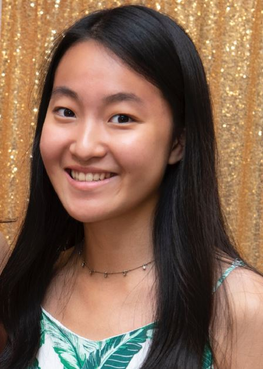
Iris Lang is a senior at American Heritage School Plantation. She began competing in the AMC series and Mathcounts in middle school. Since joining FLSAM, she has met an amazing community of people and has competed in various FLSAM sponsored competitions. Her favorite part of math is combinatorics, but she is still exploring the many mathematical topics out there. Besides math, Iris enjoys watching TV/movies, listening to music, playing soccer, biking, eating ice cream, and whistling.
Divij Lankalapalli:
Co-Vice President, Region 3
Coordinator
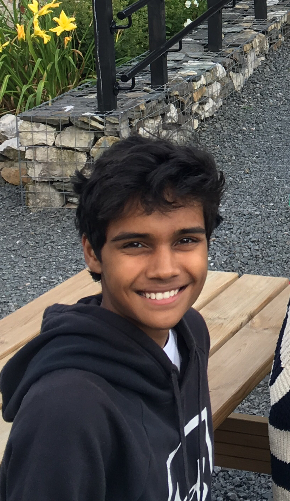
Divij Lankalapalli is a junior at Seminole High School. He began participating in math contests in 4th grade and has since competed in Mathcounts, FAMAT, AMC, AIME, and USAMO. He joined FLSAM in tenth grade and is glad to have had the opportunity to meet like-minded individuals who share one of his greatest interests. Divij also enjoys teaching others both curriculum and competition math. When he isn’t solving math problems, he can be found sleeping, watching TV, or spending excessive amounts of time on Desmos.
Jae Young Beck:
Co-Vice President
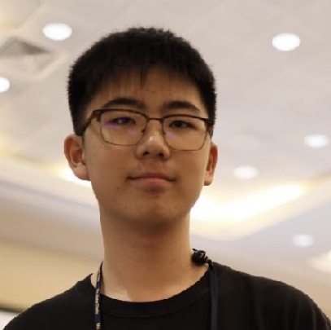
Jae Young Beck is a senior at American Heritage Plantation. He began competing in Mathcounts in middle school and has been a part of FLSAM since ninth grade. His favorite type of math is Algebra and bashing, particularly coordinate geometry. He enjoys writing his own math problems, teaching math to students, and creating teaching materials. Outside of math, he enjoys video games, especially League of Legends, and East Asian cultures.
Karthik Vedula:
Region 1 Coordinator, Curriculum
Committee

Karthik Vedula is a sophomore at James S. Rickards High School. He started going to math competitions in 3rd grade, and ever since then his interest in math has only grown. He discovered FLSAM in 6th grade and got exposed to even more difficult and intriguing questions in competitions such as PUMaC and CMIMC. His favorite part of math is meeting the many new, diverse, interesting, and funny people during math competitions. Other than that, he really enjoys solving and creating geometry questions, as well as eating them for breakfast, lunch, and dinner. In his spare time, besides eating geometry questions, one can find him eating real food, sleeping, or playing table tennis.
Atharva Pathak:
Region 2 Coordinator
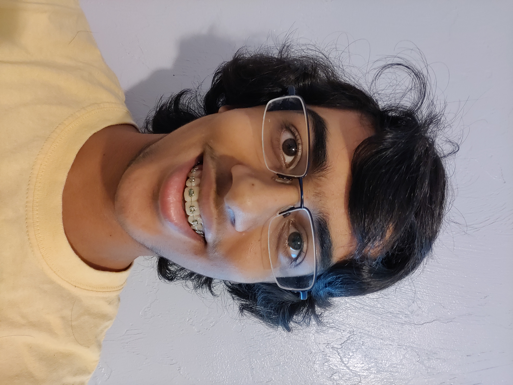
Atharva Pathak is a junior at Eastside High School in Gainesville. He was introduced to FLSAM through people at Mathcounts and FAMAT events in middle school. His favorite general area of math is combinatorics. Atharva can often be found reading football news about the Florida Gators, watching football, or trying to throw a football. Intermittently he plays violin or tries to learn introductory physics.
Neil Shah:
Region 4a Coordinator
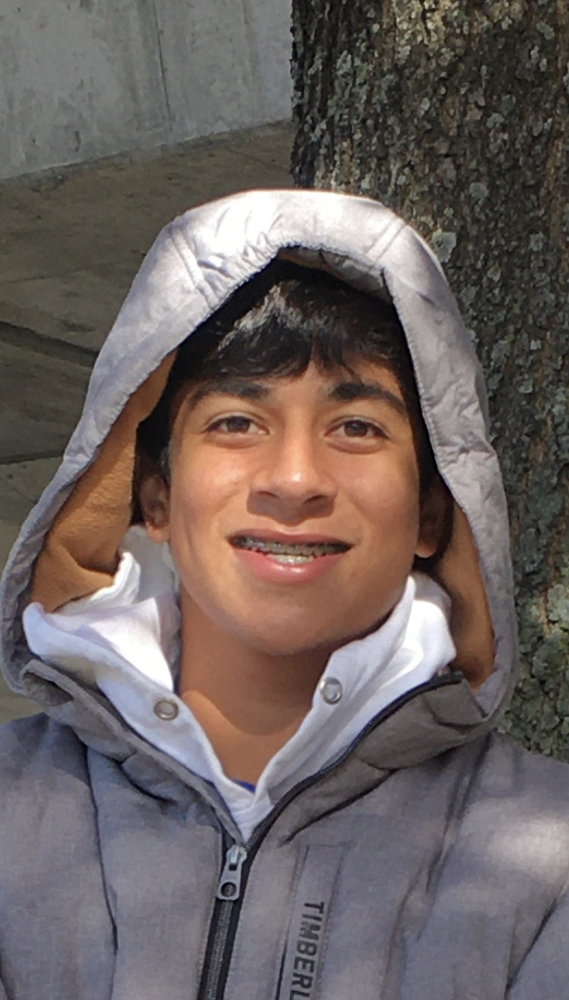
Neil Shah is a senior at Largo High School. He’s been competing in math competitions since 4th grade and has since competed in Mathcounts, AMC, AIME, ARML, and Mu Alpha Theta. When his school stopped doing Mu Alpha Theta, he shifted his focus to problem-solving math and joined FLSAM in 9th grade. FLSAM has enabled him to develop friendships with many like-minded individuals to play Roblox with till 5 am. Neil eventually realized his incompetence in geometry questions and stuck to combinatorics and algebra. In his spare time Neil enjoys playing tennis with friends, online chess, and listening to Kanye.
Jordan Hochman:
Region 4b Coordinator
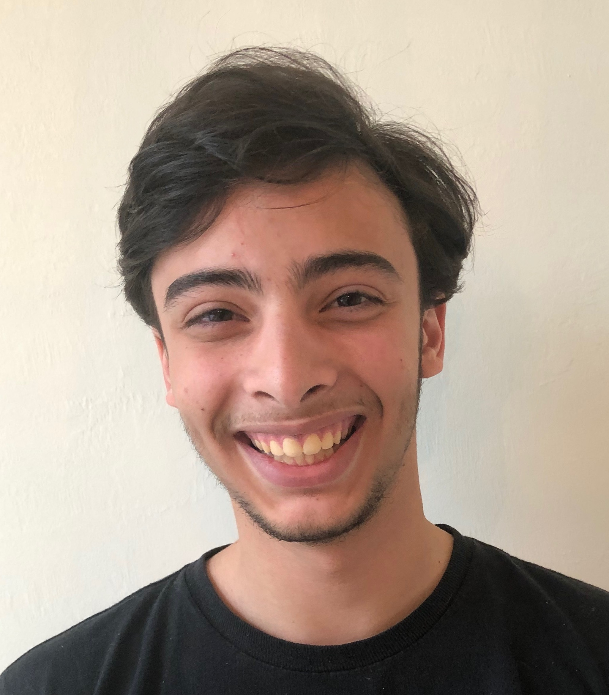
Jordan Hochman is a senior at the Community School of Naples. He has participated in Math Counts, FAMAT, AMC, AIME, ARML, and any other math competition he is able to go to. He likes all types of mathematics and does not have one specific favorite topic. Jordan likes to tutor other students in math and computer science in his free time. When he is not doing math, he loves solve different types of Rubik’s cubes, play Rocket League, program in python and java, and play piano.
Christina Zhang:
Region 5a Coordinator

Christina Zhang is a junior at American Heritage Plantation. She has loved math her whole life but started participating in math competitions and was introduced to FLSAM in freshmen year. Her favorite subject in math is geometry and she enjoys helping other people with math. Outside of math, Christina likes watching Netflix, sleeping, playing the flute, and making paper stars. She is excited to meet new people and inspire others to join FLSAM.
Steven Diaz:
Region 5b Coordinator
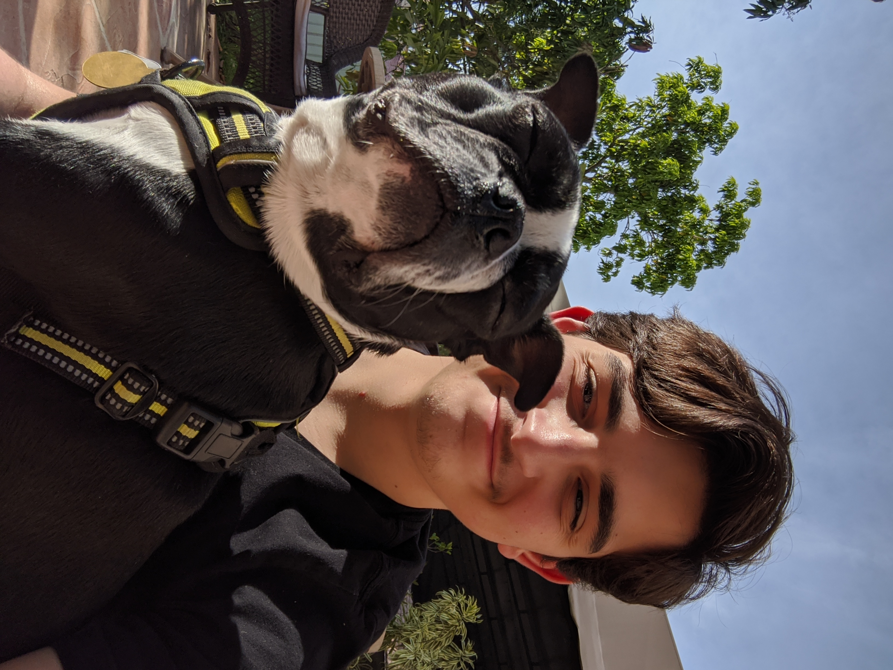
Steven Diaz is a junior attending Doral Academy High. This will be his second year as an officer and his third as a member of FLSAM. Steven first discovered his affinity for competitive math while attending local competitions in 6th grade and he’s been grinding away ever since! In his free time, he enjoys monitoring his investments in the stock market, hanging out with his four siblings, and playing Ultimate Frisbee.
Anjali Vadlamudi:
Region 5c Coordinator
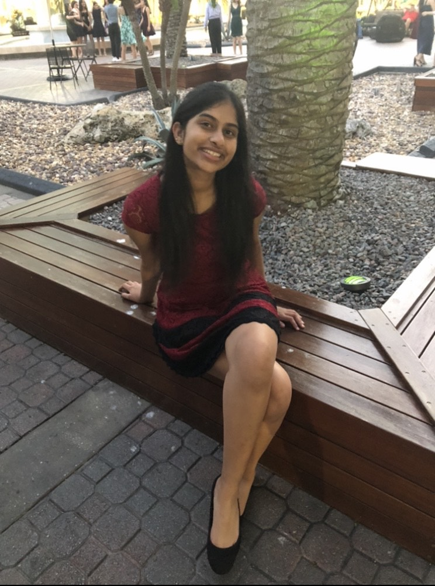
Anjali Vadlamudi is a senior at American Heritage School Boca/Delray. She’s been doing math for as long as she remembers and wishes she learned about FLSAM before tenth grade. Except geometry, she enjoys all the other subjects in math, but her favorite subject is definitely combinatorics. She has competed in various competitions including FAMAT, AMC, MathCounts, AIME, and ARML. She teaches competitive math online and wants to continue spreading her love for math by encouraging kids to join FLSAM. When she’s not doing math, she loves sleeping, listening to music, binge watching Netflix shows, and trying to play tennis.
Albert Wang:
Chair of Curriculum Committee
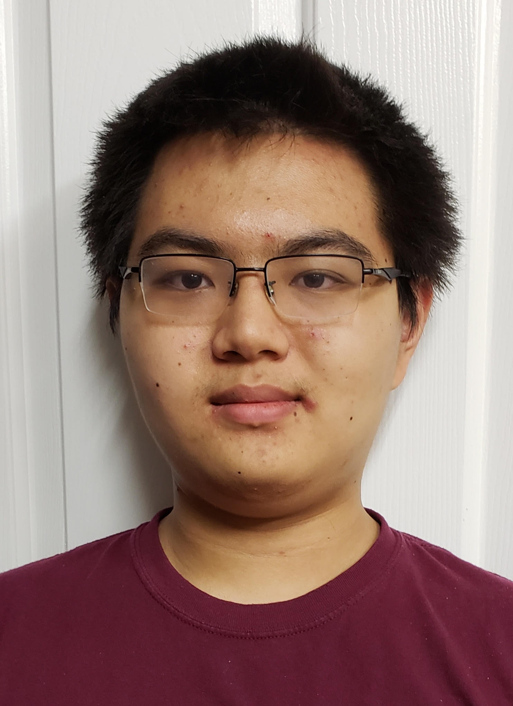
Albert Wang is a junior at Cypress Bay High School. He’s been a math enthusiast since he was in 4th grade, and when he began participating in FLSAM during 8th grade, he was hooked. Albert has competed in the AMCs, FAMAT, ARML, AIME, and both levels of the USA(J)MO. Shortly after being introduced to various collegiate competitions such as CMIMC and HMMT through FLSAM, he began to write his own problems, made for contests, tryout tests, but most importantly, for challenging his friends with interesting mathematical ideas. When he’s not solving math problems, he can be found programming, playing the piano, binging Youtube, and playing fish.
Aaron Hu:
Curriculum Committee
Aaron Hu is a freshman at Lawton Chiles High School. He began competing in Mathcounts in sixth grade. He discovered FLSAM in seventh grade and has actively participated in FAMAT and the AMC series. His favorite part of math is geometry. Besides doing math, he spends his time playing tennis, reading, and playing Minecraft.
Alexander Li:
Curriculum Committee
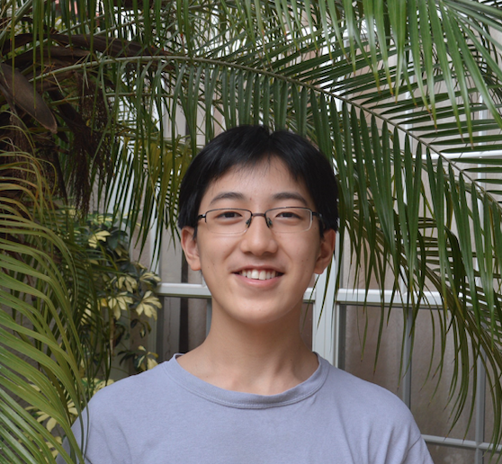
Alexander Li is a freshman at King High School. He began competing through AMC 8, and later Mathcounts in middle school, joining FLSAM in 7th grade. His favorite topic in math is geometry that can be solved with synthetic methods. If he is doing math, Alex enjoys writing combo and geo problems, as well as attempting to read AwesomeMath books. Otherwise, he is probably doing physics and chemistry or mope-ing and surviv-ing.
Ritvik Teegaravapu:
Curriculum Committee
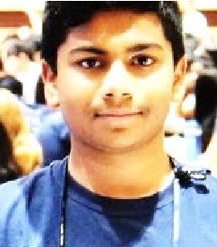
Ritvik Teegavarapu is a junior at American Heritage Boca Delray. He began competing in MathCounts and FAMAT in 6th and 7th grade. Since then, he has competed in AMC, Mu Alpha Theta, and CMIMC, which had problems that really piqued his interest. With this, he has become an avid problem writer, which has become his passion now. In his free time, you can find him failing USACO Platinum Problems, or doing chemistry and physics.
Charley Cheng:
Curriculum Committee
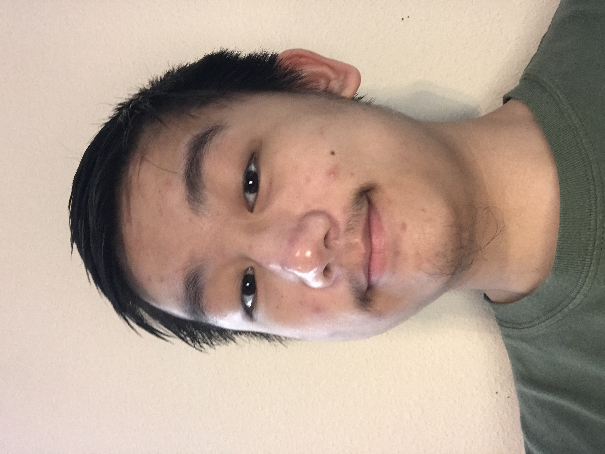
Charley is a junior at Middleton High School. His first experience with math competitions was mathcounts in 6th grade. He joined FLSAM in 8th grade and has been enjoying all the competitions that they attend such as PUMaC, HMMT, and ARML. His favorite problems in math are combinatorics ones that can be solved with (engineers) induction. He also enjoys other subjects such as coding and chemistry. When not studying, he likes to play ping pong and watch the NBA.
Saathvik Selvan:
Curriculum Committee
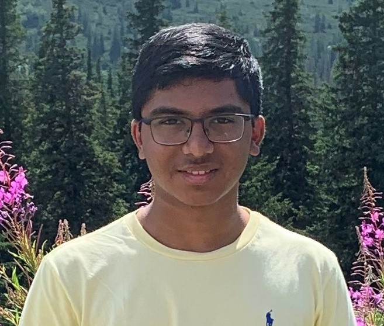
Saathvik Selvan is a junior at American Heritage School. He started doing math competitions since he did the AMC8 in 5th grade and developed a passion for competing. Since then, he has competed in various other math contests such as FAMAT and Mathcounts. He discovered FLSAM in 9th grade and got exposed to even more math contests such as HMMT and ARML. Although he has many favorite topics in math, Geometry is definitely not on that list. He enjoys teaching other people, but can also be found playing video games, listening to music, playing the drums, and doing competitive programming.
Brighten Jiang:
Webmaster

Brighten is a junior at Lawton Chiles High school. He started math competitions in middle school with FAMAT but only joined FLSAM in 9th grade. Since then he has taken part in the AMC, mathcounts, and FAMAT competitions. Brighten's favorite subject is geometry. Besides math, he enjoys coding, playing video games, or playing tennis.